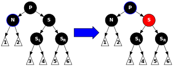
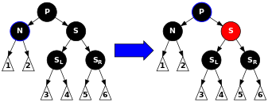

Red Black Tree
- Each Node is either black or red.
- Root Node is always black.
- If a node is red, both of its children have to be black
- Every path from the root node to any degree of 0 or 1 must contain the same number of black nodes
 

Under construction
Use rotations and recoloring to balance the tree to make sure the color order is maintained.